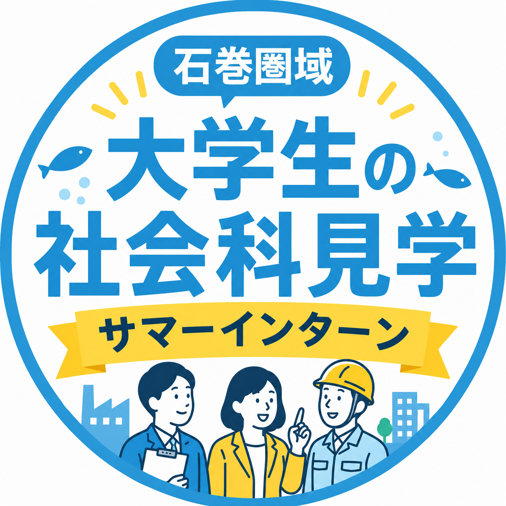

取材型サマーインターン｜事前案内
事前研修
全チーム共通
13:30〜17:50
企業訪問
チームごとに訪問先が違う
比較・発表
全チーム共通
13:30〜17:00
| チーム | 9/15（火） | 9/16（水） | 9/17（木） |
|---|---|---|---|
| A | 空き日 | 大興水産 終日 |
千葉工務店 終日 |
| B | 元気いちば 午前のみ |
真壁病院 終日 |
石巻精機製作所 午前のみ |
| C | 西條設計コンサルタント 終日 |
空き日 | マルカ高橋 午前のみ |
| チーム | メンバー | ||||
|---|---|---|---|---|---|
| A | 佐藤瞬太郎・工藤拓海・佐々木碧唯・加藤璃玖 | ||||
| B | 及川葵蓮・佐藤優太・舘内大和・野崎智史・三澤拓己 | ||||
| C | 尾崎裕介・阿部真裟人・小堺悠真・阿部遼斗・小松仁 | ||||